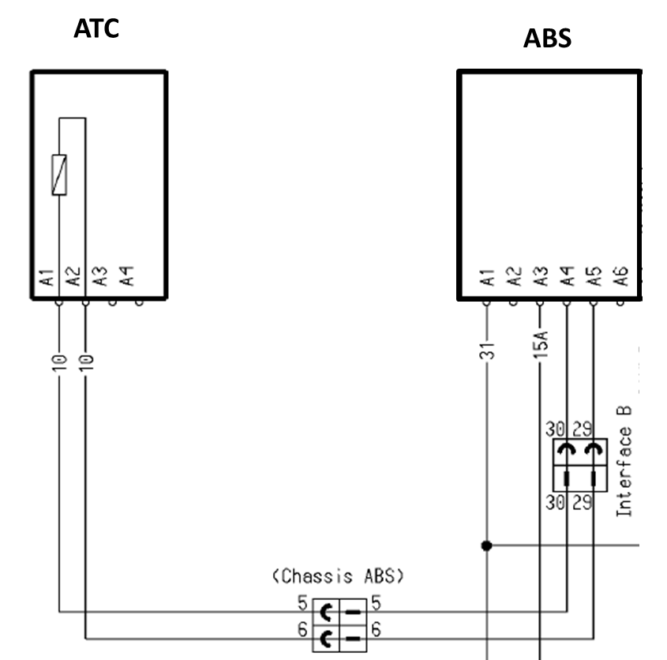

|
1- Entrada de ar
2 – Saída de ar
3 – Exaustão
Meio: ar
Pressão de operação: 5,5 – 10,0 bar (não
é permitido vácuo na conexão 2)
Pressão máxima: 12.5 bar
Seção de passagem:
- Da conexão 1 para 2: ''1 .8mm
- DA
conexão 2 para 3: v1 .9mm
Tensão de alimentação 21-32V conforme
seguinte limitação: R = 128 -2± 8%
Limites de temperatura para aplicação:
-40/+80ºC com a seguinte limitação:
Funcionamento com condição de fluxo de ar
ambiente 12m/s):
+65ºG ... +85'G 0% fator de utilização
B40h
-40ºC ... +65ºC 0% fator de utilização sem limitação de
tempo
+70ºC ... +85'C 70% fator de utilização U=20
...28V com ciclo de 5
min. (210s atuando/90s desligada)
-40ºC ... +70ºC 100% fator de utilização U
< 28V
+70ºC ... +85ºC 60% fator de utilização U
< 30V
-40ºG ... +60ºG 100% fator de utilização U
< 30V
Descrição da Falha
Circuito da válvula ATC, tensão abaixo do normal ou curto ao negativo.
Indicação de Falha
Luz de alerta da central acende constantemente com o símbolo com o veículo andando ou parado.
Estratégia de Monitoramento
O
módulo ABS monitora o correto funcionamento da válvula ATC.
Efeito da Falha
A
funcionalidade elétrica do sistema ABS é feita automaticamente e caso
seja detectada alguma anomalia, uma luz de advertência acende-se no
painel de instrumentos e o sistema ABS ficará inoperante parcialmente ou integralmente.
Possíveis Falhas
FMI 03: tensão acima do normal ou curto ao positivo.
FMI 04: tensão abaixo do normal ou curto ao negativo.
FMI 05: corrente abaixo do normal ou circuito berto.
FMI 13: fora de calibração.
FMI 14: componente incorreto.
Aviso
 O
ajuste de posicionamento do sensor em relação à roda dentada, ocorrerá
automaticamente no primeiro movimento da roda de acordo com a excentricidade do rolamento da roda, porém não poderá
ultrapassar a 0,6 mm. O
ajuste de posicionamento do sensor em relação à roda dentada, ocorrerá
automaticamente no primeiro movimento da roda de acordo com a excentricidade do rolamento da roda, porém não poderá
ultrapassar a 0,6 mm.
Registros de Falhas em Outros Módulos de Comando
Não.
Considerar os esquemas elétricos do veículo
| Verificação
| Medição
| Eliminação da Falha
|
Válvula ATC/Módulo ABS
|
Continuidade do circuito:
- Verifique a continuidade do circuíto conforme o diagrama elétrico do sistema ABS.
|
- Verifique se há vazamento de pressão nas conexões da válvula ATC.
– Verificar os cabos quanto à rompimento ou fios expostos.
– Verificar as conexões quanto a mau contato ou pino torto.
- Verificar a configuração do sistema.
- Verificar o correto funcionamento da Válvula ATC.
- Caso nenhuma falha seja verificada, substituir o Módulo ABS.
|

|